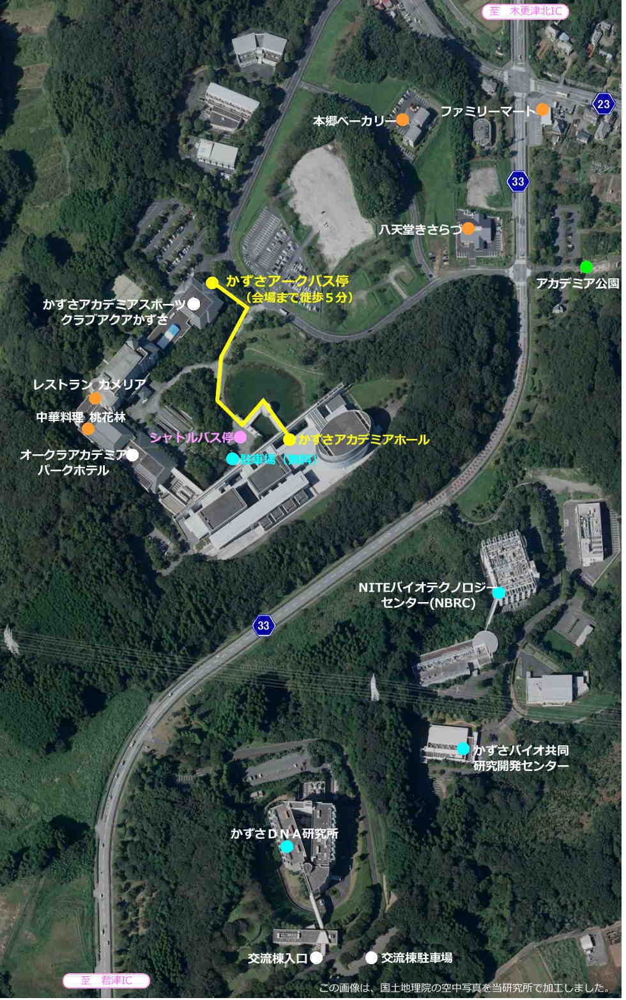

HOME
開催概要・年会組織
ご挨拶
プログラム・日程表
参加申込・演題登録
座長・発表者へのご案内
参加者へのご案内
出展・広告関連
お問い合わせ
参加者へのご案内
口頭発表者、ポスター発表者はオンサイトでの発表をお願いします。
COVID-19に係る緊急事態宣言やまん延防止等重点措置などが発令されていない場合は、口頭発表者およびポスター発表者はオンサイトで発表をお願いします。
一部の発表のみオンライン配信（ハイブリッド）することを予定しています。
会場のかずさアカデミアホールは最寄りの木更津駅から
バスで25分かかります。
3/8-10は木更津駅から会場間の有料(500円)のチャーターバス（車内で運賃支払い）を3台用意いたします。
路線バスとチャーターバスの両方をまとめたバス時刻表は
このPDFファイル
になります。日によってチャーターバスの発着時刻は異なりますのでご注意ください。
木更津駅西口のチャーターバスの発車場は3箇所あり、当日の交通状況に応じて
3箇所
のどこから発車するかは変わりますのでご注意ください。
会場のかずさアカデミアホールは周囲に食事を取る場所や購入する場所がありませんので、会場到着後に食事を取りたい方は弁当等をご持参いただくか、2日目と3日目の昼食については参加登録の際に昼食弁当をご希望ください。
会場周辺の情報については以下の地図をご参照ください。

現在他の詳しいご案内は準備中です。
ページの先頭へ
年会に関するお問い合わせ
Copyright © 2023 Society of Genome Microbiology, Japan. All Rights Reserved.